![]()

Systematic Review of Soil Moisture monitoring using Unmanned Aircraft Systems
Abstract
Insert abstract here.
Keywords
soil moisture, unmanned aerial systems, remote sensing, systematic review, precision agriculture, data fusion
Abstract
—- just draft - thoughts —- (Purpose) Soil moisture (SM) is a key variable in agricultural monitoring and water management and is increasingly evaluated using remote sensing approaches. This study aims to systematically review recent advances in soil moisture estimation (SME) with a focus on high-resolution and UAV (Unmanned Aerial Vehicle)-applicable approaches.
(Methods) A systematic review following PRISMA 2020 guidelines was done using Web of Science and Scopus. Bibliographic data were processed, classified, and screened using custom Python-based tools combining rule-based text analysis and manual validation. A dual UAV relevance framework was applied to distinguish between direct UAV studies and satellite-based approaches with potential UAV applicability.
(Results) A total of 1133 records were retained after deduplication. After excluding 115 review articles, 1018 records were screened. Automated screening classified 249 records (24.5%) as include, 724 (71.1%) as maybe, and 45 (4.4%) as exclude. A subset of 48 records (4.7%) was flagged as must-cite (22 core, 26 transferable). Satellite-based studies dominated the dataset, while UAV-related studies represented a smaller but methodologically important subset.
(Conslusion) The results highlight a strong reliance on satellite-based approaches and reveal a gap between existing methods and their implementation in UAV-based workflows. At the same time, transferable methodologies—particularly scaling and data fusion—represent a key bridge between satellite and UAV applications.
Introduction
Importance of Soil Moisture
Soil is one of the key natural resources that is essential for terrestrial ecosystems and human society. It is of fundamental importance for agricultural production, as it is a source of water and nutrients for vegetation and also creates a habitat for soil organisms and other animals. At the same time, it significantly affects the water cycle and the flow of energy between the atmosphere and the Earth’s surface (Babaeian et al., 2019; Haokip et al., 2025; Montzka et al., 2026; Wang et al., 2024). Water management is crucial for agriculture in terms of production stability and crop yields. These factors are influenced by soil properties, particularly soil structure, organic matter content, and water-holding capacity (Kuunya et al., 2025; Mkhwenkwana et al., 2025; Yadav et al., 2024). In connection with climate change and the growing pressure to increase agricultural production, effective management of soil and water resources is becoming increasingly important. Knowledge of the current state of SM is one of the key pieces of information for decision-making in agricultural practice (Dong et al., 2024; Kuunya et al., 2025; Mkhwenkwana et al., 2025; Zhang et al., 2024).
There are many ways to determine SM, yet they differ in terms of accuracy, spatial scale, measurement depth, and the time span of data collection. Methods for determining SM directly in the field (in situ) provide data for specific locations and depths, whereas remote sensing methods allow for the monitoring of continuous, large-scale areas. The choice of method depends on the purpose of the measurement, the required spatial and vertical resolution, the target soil depth, and the available financial resources. An equally important element in choosing a suitable tool for SM monitoring is the technological possibilities at a given time. The following subsection summarize the development of the use of different platforms and different sensors over time (Haokip et al., 2025; Loconsole et al., 2025; P et al., 2025; Singh et al., 2026).
Historical Progress
| Time Period / Phase | Platform Paradigm | Sensor Configuration | Dominant Modeling Approaches | Key Evolutionary Milestones |
|---|---|---|---|---|
| [until 2000] | Ground-based measurements and satellites. Mapping at the watershed level using scatter sensors. |
Satellite and ground-based sensors, thermal infrared measurements emerge. | Development of fundamental crop and soil process and simulation models such as DAYCENT, DNDC, CANDY and Expert-N. | SM research is growing. Low publication of articles on smart agriculture. |
| [2000–2008] | Satellites and the first applications on common agricultural technology. |
Optical sensors on satellites. | Dominance of methods such as fuzzy sets, information systems, decision theory and mathematical models. Models such as CropSyst Random Forest (RF) are also emerging. | Defining the future direction of precision agriculture. The amount of research in smart agriculture is growing. |
| [2009–2014] | UAVs are moving into agriculture. The emergence of wireless sensor networks for irrigation automation. |
Cosmic ray sensor networks for moisture detection are emerging. | Computer simulation, decision support, cluster analysis, and land cover mapping. Irrigation design using artificial neural networks (ANN). | Growing academic interest in smart agriculture. Data collection for fusion from WSNs and satellites. |
| [2015–2018] | The advent of commercial IoT sensors and testing of UAVs with lightweight cameras. |
Integration of multispectral and RGB sensors on UAVs. Development of miniature IoT sensors in soil. | Artificial Intelligence (AI), Remote Sensing and Machine Learning (ML). First Convolutional Networks (CNN) for UAV image analysis. | Exponential growth of publications on precision agriculture. Formal beginning of the era of connecting AI and IoT for full automation of agriculture. |
| [2019–2026] | Connected Ecosystems: Autonomous UAV Swarms, IoT Sensor Networks, and High-Resolution Satellites. |
Multi-Sensor Data Fusion (RGB, Multispectral, Hyperspectral, and Thermal) and UAV-GPR. | Advanced Artificial Intelligence (Deep Learning, Transformers), Spatio-Temporal Data Fusion, Edge Cloud Computing, and Digital Twins. | Exponential growth in data fusion and AI research. Transition to fully autonomous smart agriculture and real-time decision-making. |
The evolution of SM monitoring (Table 1, Figure 1) reflects a progression from point-scale measurements and coarse-resolution observations to multi-source observation and retrieval frameworks (Teixeira et al., 2025; Zhang et al., 2024). Prior to 2000, spatial quantification relied mainly on in-situ methods such as gravimetric sampling, neutron probes, and time-domain reflectometry (Abdulraheem et al., 2024; Topp1980?), complemented by early spaceborne microwave observations. Passive microwave measurements were already available from sensors such as Nimbus-7/SMMR (Njoku1996?), while C-band scatterometers aboard ESA’s ERS-1/-2 provided coarse-resolution observations with footprints of tens of kilometres (Wagner1999?), leaving a pronounced scale gap between in-situ measurements and satellite pixels (Peng et al., 2021; Zappa et al., 2019). During this formative period, the foundations for microwave soil-moisture retrieval were established through dielectric models, physical and semi-empirical vegetation scattering models, including the Water Cloud Model (Attema1978?; Dobson1985?), and scatterometer-based change-detection approaches (Wagner1999?).
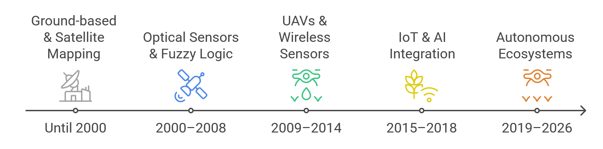
Between 2000 and the mid-2010s, dedicated microwave missions and improved retrieval algorithms substantially advanced global SM monitoring (Peng et al., 2021; Teixeira et al., 2025). AMSR-E (2002), ASCAT (2006), SMOS (2009), and SMAP (2015) provided global SM products with improved spatial and temporal coverage (Njoku2003?; Wagner2013?; Kerr2010?; Entekhabi2010?), while optical and thermal sensors such as Landsat and MODIS supported indirect estimates via surface and vegetation proxies (Sandholt2002?). Alongside these missions, wireless sensor networks enabled increasingly distributed field observations (Bogena et al., 2022; Li et al., 2020), while cosmic-ray neutron sensing (CRNS), introduced in 2008 and progressively adopted during the 2010s, provided observations at intermediate spatial scales (Heistermann et al., 2023; Zreda2008?). The International Soil Moisture Network (ISMN, initiated in 2009) strengthened ground-based validation of satellite products (Dorigo2011?).
From around 2010, in parallel with these satellite developments, the rapid adoption of UAS enabled flexible, fine-scale observations at centimetre- to decimetre-level resolution (Acharya et al., 2021; Chávez et al., 2020; Paruta2021?), helping to bridge the spatial-scale gap between in-situ measurements and satellite observations (Chakhar et al., 2021). Lightweight multispectral and thermal cameras enabled high-resolution mapping of SM-related surface properties, although SM was generally inferred indirectly (Yin et al., 2024; Zhang et al., 2023; Araya2021?) and thermal measurements required careful radiometric calibration (Chávez et al., 2020; Kelly2019?). From the late 2010s onward, UAS observations have increasingly been combined with networked in-situ sensors (Bogena et al., 2022; Bogena2010?), including IoT-enabled systems (Zhang et al., 2024), and with Sentinel-1/2 and Landsat data (Shokati et al., 2025; Bauer-Marschallinger2019?), while machine-learning approaches, from artificial neural networks to deep learning, have been increasingly applied to multi-sensor fusion, retrieval and downscaling (Yin et al., 2024; Zhang et al., 2023). Microwave payloads were prototyped on small UAS as early as 2010, when a lightweight L-band radiometer was first used for SM retrieval (Acevo-Herrera2010?), but they have remained rare. UAS-based GNSS-R and L-band radiometry have been demonstrated or simulated mainly in recent years (Farhad et al., 2025; Senyurek et al., 2022), and an airborne simulation of UAV observations indicated higher sensitivity of L-band emission to near-surface SM than thermal-optical approaches (Ye et al., 2024), yet these systems remain at an experimental stage. UAS-borne radar, including ultra-wideband and ground-penetrating radar (GPR), has also emerged as a specialised approach to shallow-subsurface SM mapping (Guo et al., 2022; Wu2019?). Despite these advances, retrieval remains constrained by limited direct sensitivity to subsurface and root-zone moisture (P et al., 2025; Albergel2008?), vegetation effects, soil texture and roughness, site-specific calibration and limited transferability (Döpper et al., 2022; Teixeira et al., 2025).
Existing reviews and Research Gap
A significant number of review articles have been published related to SM or general application of UAVs in agriculture (Acharya et al., 2021; Mowla et al., 2026). A total of 115 review articles were identified during the survey described in the “Review Methodology” section. These articles were set aside and retained solely as background material. Online Resource 2 compares a selected subset of these reviews (not the complete set of 115). This selection showed the difference between SM-centred satellite/in situ reviews and UAV reviews in which SM is only marginal. Table 2 groups an even smaller set of representative UAV reviews by application domain.
Current research is shifting from the use of a single platform to the utilization of combinations of platforms and data sources, as illustrated in Online Resource 3. As further evidenced in the literature, individual platforms have significant spatial, temporal or operational limitations that can be mitigated through such combinations (Bogena et al., 2022; Huang et al., 2026; Teixeira et al., 2025). Currently, the full integration of satellite, UAV, and in situ data driven by artificial intelligence (AI) and machine learning (ML) algorithms or Digital Twins is now the main focus. (Dong et al., 2024; P et al., 2025; Tsaousidis et al., 2026).
Despite this clear trend toward multi-source integration, existing review papers fail to critically evaluate the underlying operational workflows of the individual platforms involved. While these reviews demonstrate the breadth of UAVs’ utility for acquiring a variety of high-resolution spatial data, they do not provide a focused methodological evaluation of their use specifically for SME. (Acharya et al., 2021; Mowla et al., 2026; Yang et al., 2025)
Although UAVs are increasingly used in agriculture, existing studies provide only limited methodological guidance for SME using UAVs. In particular, standardized procedures for UAV data acquisition and processing, including flight parameters, sensor configuration, radiometric and geometric calibration, georeferencing, design of validation measurements, time synchronization with ground data, and uniform metadata reporting, are lacking. This significantly limits the possibilities for comparison and further applicability of published results. This systematic review is therefore needed not only to summarize the approaches used, but also to identify methodological gaps and support more standardized procedures when working with UAV data, especially in the context of soil moisture monitoring.
| Category | Monitored parameters | Sensors and technologies used on UAV | Practical use and main findings | Resources |
|---|---|---|---|---|
| Hydrology and water management | SM, precipitation, surface runoff, water level, bathymetry, snow cover, erosion. | RGB, TIR, miniaturized UAV-GPR and microwave systems. |
Flexible, cost-effective and fast data collection, areal moisture distribution and map water resources. | (Acharya et al., 2021) |
| Precision Agriculture and Crop Yield | SM, Canopy Temperature, CWSI, NDVI, ET, Disease, Weed and Nutrient Status Detection. | MS, HS and TIR, RGB, LiDAR. 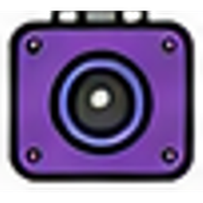 |
Yield Prediction, Variable Fertilizer and Spraying Rate and Effective Detection of Biotic and Abiotic Stress. Identification of Water Status Variation and Controlled Precision Irrigation. | (Ali et al., 2024; Awais et al., 2023; Balathandayutham et al., 2025; Ezenne et al., 2019; Mowla et al., 2026) |
| Ecosystems and landscape mapping | Energy and \(CO_2\) fluxes, total vegetation biomass, soil degradation, wetland mapping and SM conditions. | TIR and MS, image processing using SfM. |
Monitoring the health of large ecosystems, UAVs with thermal sensors detect places with high evaporation and moisture. Very high resolution landscape structure data. | (Acharya et al., 2021; Jeziorska, 2019) |
First, we present a brief comparison summarizing key monitoring approaches and methodological trends (Table 3); a more detailed overview of specific sensor technologies (e.g., TDR, SAR, UAV-GPR), their application, and integration is provided in Online Resource 3.
| Monitoring Paradigm | Platform Combinations | Core Benefit & Processing Strategy | Representative Sources |
|---|---|---|---|
| Isolated Platforms | In situ only, Satellites only, UAVs only | Basic data with limitations in coverage, frequency and measurement depth. | (Bogena et al., 2022; Dong et al., 2024; Mkhwenkwana et al., 2025) |
| Partial Data Merging | UAV + In situ, Satellite + UAV, Satellite + In-situ | Reducing the limitations of individual platforms using ML, e.g. refining satellite maps with UAV data and calibrating UAV images with in situ probes for the root zone. | (Bazrafkan et al., 2025; Haokip et al., 2025; Teixeira et al., 2025) |
| Complex Integration | Satellites + UAVs + In situ | Connecting spatial, temporal, and depth data using deep learning (DL) to create digital twins and control irrigation in real time. | (P et al., 2025; Saki et al., 2025; Tsaousidis et al., 2026) |
The use of isolated platforms entails certain limitations (Table 3). While ground-based (in situ) networks enable highly accurate and continuous SM measurements, scaling them up to cover large areas is neither cost-effective nor time-efficient (Bogena et al., 2022; Loconsole et al., 2025). In contrast, satellite remote sensing offers broader spatial coverage but comes at the cost of low spatial resolution and potential interference from cloud cover or dense vegetation (Mkhwenkwana et al., 2025; Pablos et al., 2025). UAVs bridge the gap between in situ and satellite data by providing ultra-high spatial resolution beneath cloud cover, albeit with limitations regarding spatial extent (Dong et al., 2024).
Given the limitations inherent to each platform, current research focuses on integrating diverse datasets using mML algorithms. Combining imagery from UAVs and satellites allows for the utilization of their complementary spatial characteristics (Bazrafkan et al., 2025; Teixeira et al., 2025). Similarly, combining UAV data (e.g., multispectral or thermal imagery) with in situ data (e.g., from soil probes) enables ML models to derive root-zone SM, thereby compensating for the shortcomings of optical sensors (Dong et al., 2024; Haokip et al., 2025).
Aim and Scope this Review
This review study summarizes approaches to measuring and estimating soil moisture using various remote sensing platforms, sensors, methods, and applications. It further evaluates the reporting of platform specifications, sensor specifications, flight and acquisition settings, data/output characteristics, and data processing specifications. The aim is to assess the need for standardizing this information to ensure the comparability and reproducibility of research studies.
Review Methodology
Unlike previous reviews, part of the process in this instance was automated (Figure 2). Automation was employed in selected stages of the process to enhance transparency, auditability, and reproducibility. The systematic review adhered to the recommendations set out in the PRISMA 2020 guidelines for systematic reviews (Page et al., 2021a, 2021b).
The search was conducted on April 29, 2026, using a Python (v. 3.13.13) script WoS_Scopus_query.py. This script generated equivalent search queries for Web of Science (Clarivate Analytics) and Scopus (Elsevier), thereby minimizing the risk of discrepancies arising from the manual transcription of syntax. Custom Python scripts created for this study—available at github.com/LenkaMikova/PRISMAtools—were utilized. Zotero was used for citation management and the manual screening of selected records.
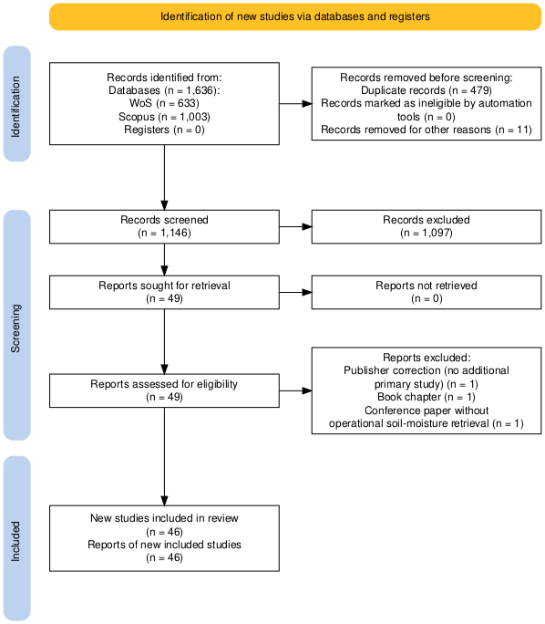
Data Selection
A systematic literature search was conducted using two major bibliographic databases Web of Science and Scopus. Figure 2 shown a total of 633 records were retrieved from the Web of Science database and 1003 records from Scopus prior to duplicate removal (1636 records total; 1133 retained as correct_record). The resulting records were exported from the databases in RIS format. Search parameters were set to capture studies focusing on soil moisture (SM) using remote sensing methods, with an emphasis on agricultural applications and multi-scale analysis.
The operators AND and OR were used, along with truncation symbols (*) and phrase searching. The final query combined five thematic groups: target variable (soil moisture), observation method (remote sensing), platform (UAV, UAS, drone, satellite), application area (agriculture-related terms, e.g., agricultural land, arable land, farmland, and bare soil), and methodological approach (precision agriculture, irrigation, water management, downscaling, multi-scale analysis, data fusion). Keywords were searched for in the title, abstract, and keywords. The search was restricted to publication years 2019–2026 and the English language. The complete search strings created for both databases are listed in Online Resource 4.
Data Workflow
The processing workflow is shown in Figure 3. Records from both databases were imported and merged into a single dataset. After merging data from the databases, the data were cleaned (merge_and_classify.py). Duplicates were identified using DOI matching and title–year comparison and verified manually. In cases of conflicting metadata (e.g., inconsistent DOI assignment), records were cross-checked and corrected to retain the most reliable version. Records were checked for completeness and publication type. Only books were removed at the audit stage, because this review focuses on primary research articles. Conference papers and book chapters were kept and assessed later during screening. All records, including the removed ones, are listed in one dataset with the reason for exclusion. A rule-based text analysis was applied to titles, abstracts, and keywords. The script assigned thematic attributes including platform, sensor characteristics (type and acquisition mode), application domain, methodological approach, scaling strategies. UAV relevance was evaluated at two levels: direct applicability, based on explicit UAV-related terminology; and potential applicability, defined as satellite-based studies with transferable characteristics (e.g., optical sensing or scaling approaches). The initial dataset contained 1133 records after merging and preprocessing. Of these, 115 records were identified as review articles and excluded from further analysis, resulting in 1018 records included in the screening stage.
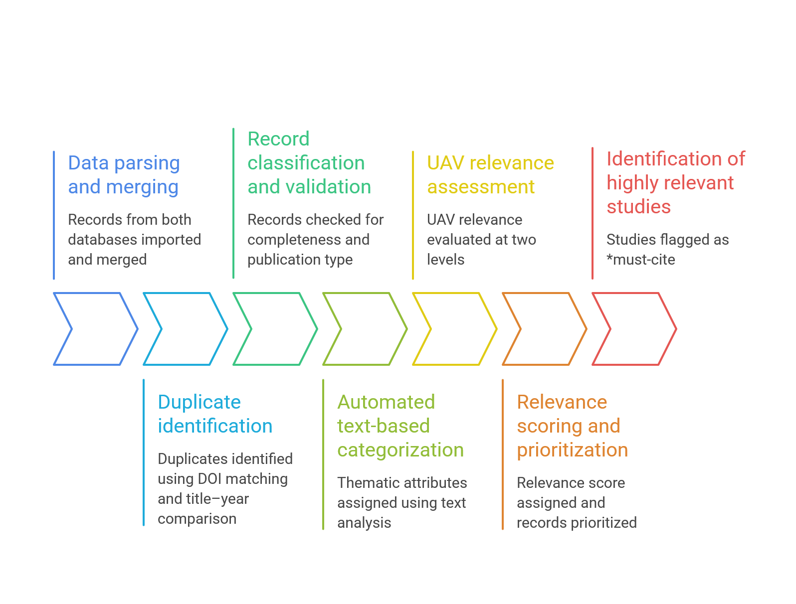
Dataset Overview
The relevance score script (screening_and_deep_classify.py) assigned each record a category: included, maybe, or excluded. Keyword weights were established: soil moisture (+2), direct UAV/drone/UAS terminology (+3), scaling or data fusion (+2), and agricultural context (+1). Potential applicability to UAVs was recorded separately and not included in the score calculation. Records were classified as included (score ≥ 6), maybe (score 3–5), or excluded (score < 3). Automated screening classified 249 records (24.5%) as include, 724 records (71.1%) as maybe, 45 records (4.4%) as exclude. The threshold was set low so that potentially unsuitable records would remain marked as maybe rather than being excluded. Subsequently, the automatically generated scores were manually verified.
In addition, relevance scores and screening categories were analyzed to assess the distribution of study relevance and to support prioritization during data extraction. UAV relevance was analyzed at two levels (direct and potential) to distinguish between explicitly UAV-based studies and satellite-based approaches with transferable methodologies. This distinction was used to better interpret the relationship between current remote sensing practices and emerging UAV applications. Results are reported as absolute counts and relative proportions. No meta-analysis was performed due to heterogeneity in study designs, data sources, and evaluation metrics. All analyses were conducted using Python.
A subset of studies was flagged (extraction_templ.py) as must-cite using a two-tier approach: core studies (must_cite_strict): relevance score ≥ 7, direct UAV usage, and scaling approaches; and transferable studies (must_cite but not strict): score ≥ 6 with transferable UAV potential (scaling or passive sensing). A subset of 48 records (4.7% of non-review studies) was identified as highly relevant (must-cite), further divided into 22 core studies (2.2%), 26 transferable studies (2.6%).
Two datasets were prepared. The full dataset included records classified as “include” and “maybe” to ensure comprehensive coverage. The other was the refined dataset, comprising only records classified as “include,” intended for targeted analysis. The refined dataset was further structured using priority levels and batch processing to facilitate manual review. Extracted fields were completed from the full text. Data analysis was conducted using a combination of descriptive statistics and categorical aggregation. The analysis focused on platforms, sensor types and acquisition modes, application domains, methodological approaches, and scaling strategies. Keyword frequency analysis was performed using rule-based text matching applied to titles, abstracts, and keywords. This analysis was used to identify dominant research trends and methodological patterns. The resulting keyword frequencies are listed in Online Resource 6.
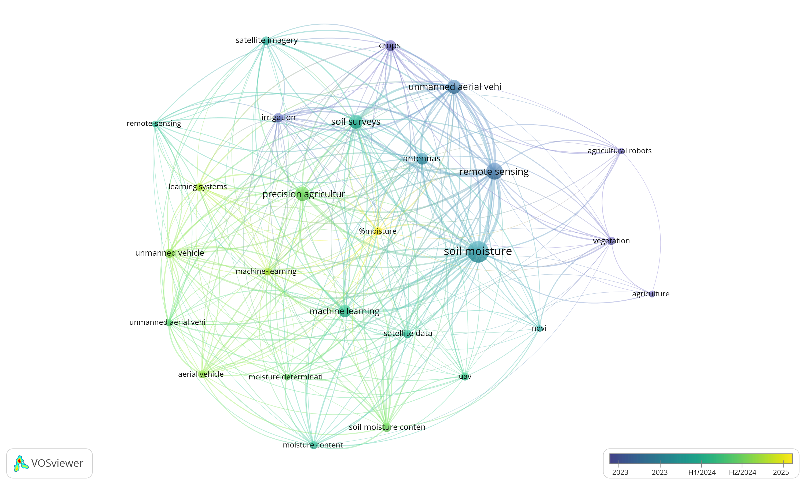
Keyword co-occurrence analysis was performed in VOSviewer. This analysis is presented in Figure 4 and was visualized using VOSviewer software version 1.6.20 (VOSviewer2010?). The RIS file was imported to the VOSviewer and analysed using full counting. Forty-eight articles were analyzed. The tool settings were as follows: Type of analysis: Co-occurrence; Unit of analysis: Keywords; Counting method: Full counting; Minimum number of keyword occurrences: 5. Out of a total of 6,582 keywords, 26 items were visualized and divided into four clusters. There were 275 links, and the total link strength reached 1,074.
Figure 5 shows the 48 must-cite (HIGH-priority) records by publication year and scaling type. Records were first classified automatically from the title, abstract, and keywords using three phrases: data fusion, downscaling, and multi-scale. Where these terms were absent, the remaining records were assigned manually; this includes the category none.
The four categories are used as follows. Data fusion denotes studies that combine observations from more than one sensor or platform (for example satellite and UAV, or optical and microwave) into a single soil-moisture estimate. Downscaling denotes studies that transfer a coarser product, typically a satellite soil-moisture field, onto a finer spatial grid. Multi-scale denotes studies that treat two or more spatial scales as complementary in the same analysis rather than converting one into the other. None denotes studies with no scaling step in this sense: soil moisture is retrieved at a single observational scale (most often a UAV campaign or a ground network), or platforms are compared without being combined. These labels describe the scaling strategy, not the sensor payload.
The majority of the must-cite studies focused on agricultural applications, most frequently involving arable land, agricultural land, or related agricultural systems. The inputs, application settings, and reported accuracy metrics (RMSE, R²) for the 45 extracted “must-cite” studies are presented in Online Resource 8, Online Resource 9, and Online Resource 10. Satellite-based approaches were more strongly represented than studies primarily based on UAVs. However, a significant proportion of the studies are transferable to UAV applications. While studies involving UAVs constitute a smaller share, they are nonetheless important, particularly regarding high-resolution data.
This classification allows a clear distinction between direct evidence and transferable methodological knowledge. The full automated screening summary is provided in Online Resource 7. Per-study extraction tables (Online Resource 8, Online Resource 9, Online Resource 10) cover 45 unique studies from the 48 must-cite records. The remaining three records are not additional studies: a publisher’s correction to one of the 45 papers (Hussain et al., 2025), a book chapter on remote sensing in precision agriculture (Surendran2024?), and a conference paper (Montzka2020?) on a C- and L-band SAR rehearsal campaign (SARSense) that did not report an operational soil-moisture retrieval. These are not the three books removed at the audit stage (already inside the 503 records removed before screening).
Scaling-related approaches, while less frequent, were methodologically significant. Downscaling and data fusion represented key strategies for improving spatial resolution and integrating multi-source data in soil moisture estimation.
Application-oriented methods were widely represented, with irrigation and precision agriculture being dominant themes, highlighting the applied nature of the research field.
The combination of scaling techniques with remote sensing platforms—particularly in transferable satellite studies—indicates a strong methodological foundation for adapting these approaches to UAV-based systems.
Trends of Soil Moisture Content in 2019-2026 (Developments in Soil Moisture Estimation in 2019-2026)
Monitoring and estimating soil moisture are considered one of the most important biophysical and decision-making pillars of precision agriculture (Chu et al., 2026; Hussain et al., 2025; Senyurek et al., 2022). As already indicated in Table 1, in the area of soil moisture monitoring and estimation, there has been and continues to be a gradual development of both the platforms used and the sensor technologies. The short tables in this chapter are categorical syntheses; the underlying 45 must-cite studies are listed individually in Online Resource 8, Online Resource 9, Online Resource 10, and, for UAV flights, Online Resource 13.
Type of Platforms
| Platform Category | Spatial Scale | Target Application | Representative References |
|---|---|---|---|
| Satellite-based |
Regional to Global (10 m – 36 000 m) | Large-scale hydrological modeling, spatio-temporal downscaling, monitoring of extended agricultural areas. | (Bhatti et al., 2020; García-Rodríguez et al., 2026; Wang et al., 2026; Zappa et al., 2019) |
| Unmanned Aerial Systems (UAS) |
Field Scale (10 mm – 5 m) | Precision irrigation, identifying intra-field heterogeneity, ultra-high resolution mapping. | (Chu et al., 2026; Döpper et al., 2022; Farhad et al., 2025; Liu et al., 2026) |
| Ground-based Mobile (UGV & Roving) |
Sub-field & Transects (mm to m) | Continuous on-the-go scanning without canopy occlusion, deep soil profile mapping. | (Heistermann et al., 2023; Zhang et al., 2025) |
| In-situ & Stationary Nodes |
Micro-scale to Local ( < 200 m footprint) | High-frequency continuous temporal monitoring, provision of absolute ground truth for model calibration. | (Chakhar et al., 2021; Heistermann et al., 2023; Keshavarz et al., 2025) |
| Laboratory & Sample-based Methods |
Point / Micro-scale | Destructive gravimetric and chemical ground-truth validation for remote sensing calibration. | (Chaparro et al., 2024; Zhang et al., 2026; Zhang et al., 2025) |
Data for precision agriculture are acquired from various platforms offering differing spatial and temporal resolutions (Table 4). The choice of a suitable platform depends primarily on the required spatial resolution and the extent of the area under observation. In terms of spatial resolution, soil moisture monitoring methods range from local, in situ point measurements (Basurto-Lozada et al., 2020; Heistermann et al., 2023) to coarser estimates derived from satellite data covering large areas. Satellite Earth observation missions (e.g., Landsat, MODIS) enable regular, large-scale monitoring. However, they are unsuitable for use at the individual field level due to their coarse spatial resolution, fixed temporal resolution (Bhatti et al., 2020; Niu et al., 2022), and the impact of cloud cover (Zhuang et al., 2023).
UAVs bridge this spatial and temporal gap (Döpper et al., 2022) by enabling on-demand data collection in the sub-cloud environment with centimeter-level resolution (Niu et al., 2022; Tauro et al., 2022), which is crucial for mapping within-field soil heterogeneity (Chakhar et al., 2021). Current research does not aim to replace spaceborne platforms but rather relies on multi-source data fusion (Shokati et al., 2025), utilizing satellite data as the primary source and UAVs as a complementary platform for local calibration, validation, and downscaling (Döpper et al., 2022; Wang et al., 2026).
However, the use of a combinations platforms is inextricably linked to the sensor equipment installed on a specific platform. While various sensors can be installed on any platform – ranging from stationary ground stations to UAV and satellites – their practical integration is strictly governed by physical payload constraints, technological compatibility and economic feasibility. Sensors selection thus represents a compromise between the required resolution and economic possibilities; so the choice of right sensor is just as crucial as selecting and combining of platforms themselves.
Type of Sensors
| Sensor Category | Physical Principle & Spectral Range | Primary Target Variables for SMC Retrieval | Key Advantages & Limitations | References |
|---|---|---|---|---|
| RGB & Multispectral (MS) |
Passive optical sensors detecting reflected radiation in the visible (400–700 nm) and near-infrared (NIR, Red-Edge; 700–1000 nm) spectrum. | Vegetation indices (e.g., NDVI, NDRE, GNDVI), fraction of vegetation cover (FVC), structural and textural parameters (GLCM). | Benefit: High spatial resolution, low weight, affordability. Limits: Inability to penetrate below the soil surface, the signal is dependent on solar illumination and interfered with by cloud cover. |
(Chen et al., 2024; Feng et al., 2025; Hussain et al., 2025; Liu et al., 2026; Yin et al., 2024) |
| Thermal Infrared (TIR) |
Passive detection of emitted long-wave infrared radiation (LWIR; typically 8–14 µm) to estimate surface temperature. | Surface temperature (LST), Crop Water Stress Index (CWSI), Temperature Vegetation Dryness Index (TVDI). | Benefit: Direct link to evapotranspiration and crop water stress. Limits: Coarser spatial resolution compared to MS sensors, high dependence on microclimatic conditions (wind, air humidity). |
(Basurto-Lozada et al., 2020; Chandel et al., 2021; Ye et al., 2024; Yin et al., 2024) |
| Hyperspectral (HS) |
Passive optical scanning in hundreds of narrow continuous bands (typically 400–1000 nm to 2500 nm). | Narrowband derivatives of reflectance, detailed physiological parameters of leaves (leaf water content LWC, leaf chlorophyll content LCC). | Benefit: Extreme information density for deep physiological diagnostics. Limits: Significant computational effort (curse of dimensionality), the need for complex data reduction (e.g., PLSR, PCA). |
(Du et al., 2024; Liu et al., 2024; Shokati et al., 2025; Zhang et al., 2025) |
| Microwave & GNSS-R |
Passive reception of reflected global navigation satellite systems (GNSS) signals or natural microwave emissions in the L-band (e.g., ~1.5 GHz). | Estimate of surface reflectivity, signal attenuation correlated with the dielectric constant of the soil. | Benefit: Ability to penetrate cloud cover and partially vegetation cover (to a depth of ~50 mm). Limits: The signal is strongly distorted by surface roughness and biomass structure. |
(Farhad et al., 2025; Senyurek et al., 2022; Wang et al., 2026; Ye et al., 2024) |
| Geophysical & Nuclear 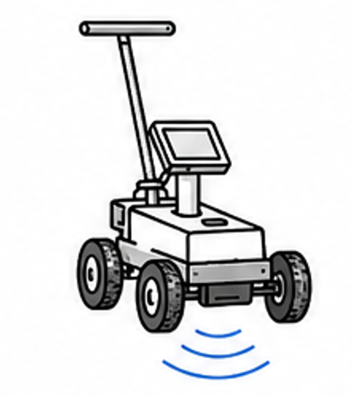 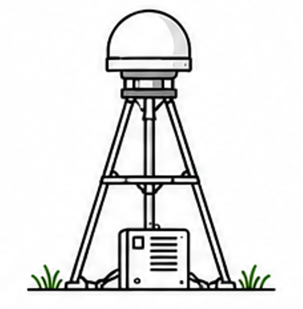 |
Active transmission of electromagnetic pulses (GPR) or passive detection of epithermal neutrons (CRNS). | Attenuation of radar signal (GPR), area-averaged hydrogen content in the soil profile (CRNS). | Benefit: Non-destructive measurement of bulk moisture in deeper soil horizons. Limits: Extreme spatial data integration (large footprint for CRNS), demanding calibration for local hydrogen pools. |
(Heistermann et al., 2023) |
As classified in Table 5, the retrieval of soil moisture and crop water stress is governed by a fundamental physical dichotomy: the trade-off between direct physical sensitivity and spatial resolution (Chen et al., 2024; Liu et al., 2026).
Passive optical (MS and HS) and TIR sensors can provide detailed information but do not allow for the direct measurement of soil moisture in the soul profile beneath vegetation (Bhatti et al., 2020; Yin et al., 2024). Instead, they capture structural, biochemical, and thermodynamic responses of the vegetation cover. MS and HS sensors monitor reflectance changes caused by chlorophyll and water absorption bands in plants, while TIR sensors record land surface temperature (LST) as an indicator of evaporative cooling (transpiration) (Basurto-Lozada et al., 2020; Chu et al., 2026; Shokati et al., 2025). However, these passive methods are limited to the surface layer of vegetation or the top layer of bare soil and are highly sensitive to varying atmospheric and lighting conditions (Chávez et al., 2020; Inocencio et al., 2025).
Dielectric-based sensing techniques, including GNSS Reflectometry (GNSS-R) and Ground Penetrating Radar (GPR), exploit the primary control of soil volumetric water content on complex dielectric permittivity (Farhad et al., 2025; Zajc et al., 2023). Specifically, L-band GNSS-R measures bistatic specular reflections sensitive to topsoil moisture (0–5 cm depth) while demonstrating robust permeability through cloud cover and moderate crop canopies (Farhad et al., 2025; Senyurek et al., 2022; Wang et al., 2026). Conversely, GPR and ultra-wideband (UWB) systems evaluate electromagnetic wave propagation velocity and signal attenuation across vertical soil profiles (Guo et al., 2022; Zajc et al., 2023). Operating on a distinct physical mechanism, Cosmic-Ray Neutron Sensing (CRNS) quantifies soil water content across hectare-scale footprints (10–50 cm depth) by measuring the moderation of naturally occurring fast neutrons by ambient hydrogen atoms (Döpper et al., 2022; Heistermann et al., 2023). Although UAV-based GNSS-R and radar systems offer high spatial resolution at the field scale, satellite-based reflectometry requires spatial disaggregation (Wang et al., 2026), whereas footprint-integrated methods like CRNS trade spatial granularity for continuous root-zone coverage and require rigorous local calibration (Heistermann et al., 2023).
Precision Agriculture 5.0 is therefore shifting away from the use of a single sensor and moving towards the fusion of data from multiple sensors (Capolupo et al., 2026; Zhang et al., 2023). Sensor combinations—such as using high-resolution MS data to refine (downscale) dielectric property estimates derived from microwave measurements, or integrating surface temperature (TIR) with vegetation indices to calculate water stress indices (e.g., CWSI, TVDI)—thus compensate for the limitations of individual methods (Du et al., 2024; Niu et al., 2025; Shi et al., 2025).
Drone studies
While multi-sensor fusion is physically robust, its operational implementation is strictly constrained by the payload capacity and energy budgets of UAV platforms. Three primary airframes govern these operational boundaries: multi-rotors, which offer vertical takeoff and hovering but limited endurance; fixed-wings, which extend range but require larger takeoff areas; and hybrid VTOLs, which combine vertical takeoff with winged flight efficiency at the expense of payload (Chávez et al., 2020). Crucially, while the airframe determines the operational flight envelope, the spectral depth and data quality are governed by the on board sensors rather than the carrier platform itself (Capolupo et al., 2026; García-Rodríguez et al., 2026).
| Primary Payload | Typical Altitude [m] | Spatial Resolution (GSD) [mm] | Overlap (Front/Side) [%] | Representative References |
|---|---|---|---|---|
| RGB & Multispectral |
20 – 70 | 4 – 50 | 75–85 / 70–80 | (Chakhar et al., 2021; Chen et al., 2024; He et al., 2025) |
| Thermal Infrared (TIR) |
15 – 70 | 19 – 90 | 80–85 / 70–80 | (Tauro et al., 2022; Yin et al., 2024; Zhang et al., 2023) |
| Hyperspectral (HS) |
25 – 100 | 10 – 40 | 70–80 / 70 | (Döpper et al., 2022; Liu et al., 2024; Shokati et al., 2025) |
| GNSS-R & LiDAR |
15 – 30 | 50 – 80 (grid) | 75 / 75 | (Farhad et al., 2025; Rafi et al., 2026) |
The operational flight configurations of UAV missions are intrinsically linked to the physical and radiometric constraints of their primary sensor payloads (Table 6). For optical and multispectral mapping, high front and side overlaps are required to guarantee a dense distribution of geometric keypoints, which is essential for stable photogrammetric reconstruction (Structure from Motion, SfM) of complex, heterogeneous crop canopies (Chakhar et al., 2021; Chen et al., 2024; He et al., 2025).
In contrast, thermal infrared (TIR) mapping demands even larger overlap margins despite its inherently coarser spatial resolution. This requirement is physically dictated by the need to compensate for the low radiometric contrast and spatial noise characteristic of uncooled microbolometers, which would otherwise result in feature-matching and image-stitching failures (Tauro et al., 2022; Yin et al., 2024; Zhang et al., 2023).
For hyperspectral missions, flight parameters must carefully balance sensor integration times with the UAV’s ground speed to prevent spatial stretching, geometric distortion, and band-misregistration across the narrow-band data cubes (Döpper et al., 2022; Liu et al., 2024; Shokati et al., 2025).
Finally, active LiDAR and specialized GNSS-R missions operate within a restricted low-altitude envelope to maximize signal-to-noise ratios and return strength, ensuring accurate 3D structural modeling and specular soil reflectivity measurements (Farhad et al., 2025; Rafi et al., 2026).
| Domain / Category | Detailed Tracked Sub-Parameter | Fully Reported (n / 45) | Partially Reported (n / 45) | Omitted (n / 45) | Full Reporting Rate (%) |
|---|---|---|---|---|---|
| 2. Sensor specification | Sensor Matrix Resolution, Lens & Focal Length | 28 / 45 | 17 / 45 | 0 / 45 | 62.2% |
| 3. Flight & acquisition settings | Acquisition Interval, Flight Time & Solar Illumination | 28 / 45 | 2 / 45 | 15 / 45 | 62.2% |
| Flight Speed & Pattern (Grid, Double-grid, Transect) | 21 / 45 | 22 / 45 | 2 / 45 | 46.7% | |
| Camera Pitch Angle (Nadir 90° vs. Oblique) | 18 / 45 | 25 / 45 | 2 / 45 | 40.0% | |
| 4. Data/output characteristics | Pixel Size, Bit Depth & Total Image Count | 32 / 45 | 11 / 45 | 2 / 45 | 71.1% |
| 5. Data processing specification | GCP Survey Accuracy & Equipment (RTK-GNSS/DGPS) | 34 / 45 | 10 / 45 | 1 / 45 | 75.6% |
| Radiometric Calibration (Panel / Downwelling Sensor) | 29 / 45 | 10 / 45 | 6 / 45 | 64.4% | |
| 6. ASPRS 2024 Geodetic Accuracy | Horizontal Accuracy Class (RMSE_H) | 30 / 45 | 0 / 45 | 15 / 45 | 66.7% |
| Vertical Accuracy Class (RMSE_V / NVA / VVA) | 7 / 45 | 0 / 45 | 38 / 45 | 15.6% | |
| 3D Positional Accuracy (RMSE_3D) | 4 / 45 | 0 / 45 | 41 / 45 | 8.9% | |
| Checkpoint Sample Size (ASPRS N >= 30) | 0 / 45 | 30 / 45 | 15 / 45 | 0.0% | |
| ASPRS 2024 Full Compliance Statement | 0 / 45 | 30 / 45 | 15 / 45 | 0.0% |
| Domain / Category | Core Parameter (Tables 1–11) | Fully Reported (n / 45) | Partially Reported (n / 45) | Omitted (n / 45) | Full Reporting Rate (%) |
|---|---|---|---|---|---|
| 1. Dataset & Metadata Identification | Persistent Dataset Identifier / DOI (dataset_id) |
5 / 45 | 0 / 45 | 40 / 45 | 11.1% |
Open Data License & Access Terms (licence) |
6 / 45 | 0 / 45 | 39 / 45 | 13.3% | |
Spatial & Temporal Extent (spatial_temporal_extent) |
12 / 45 | 18 / 45 | 15 / 45 | 26.7% | |
| 2. Flight Mission & Operation Protocols | Mission Identifier & Operator ID (mission_id) |
45 / 45 | 0 / 45 | 0 / 45 | 100.0% |
Flying Altitude Above Ground Level (nominal_agl) |
45 / 45 | 0 / 45 | 0 / 45 | 100.0% | |
Image Overlap — Front & Side (overlap_forward/side) |
36 / 45 | 3 / 45 | 6 / 45 | 80.0% | |
| 3. Platform & Aircraft Payload | UAV Aircraft Model & Class (platform_model) |
45 / 45 | 0 / 45 | 0 / 45 | 100.0% |
Onboard Navigation Mode (gnss_mode: Standalone/RTK/PPK) |
45 / 45 | 0 / 45 | 0 / 45 | 100.0% | |
| 4. Sensor Payload Specification | Sensor Classification & Type (sensor_type) |
45 / 45 | 0 / 45 | 0 / 45 | 100.0% |
Sensor Manufacturer & Exact Model (sensor_model) |
39 / 45 | 6 / 45 | 0 / 45 | 86.7% | |
Spectral Bands & Central Wavelengths (bands) |
36 / 45 | 9 / 45 | 0 / 45 | 80.0% | |
| 5. Camera Geometry & Optical Calibration | Calibrated Focal Length & Principal Point (calibrated_focal_length) |
28 / 45 | 17 / 45 | 0 / 45 | 62.2% |
Optical Distortion Model & Coefficients (distortion_model) |
18 / 45 | 25 / 45 | 2 / 45 | 40.0% | |
| 6. Radiometric & Thermal Calibration | Radiometric Calibration Method (radiometric_calibration_method) |
29 / 45 | 10 / 45 | 6 / 45 | 64.4% |
Thermal Drift & Sensor Temperature Protocol (fpa_temp_drift) |
8 / 45 | 12 / 45 | 25 / 45 | 17.8% | |
| 7. Atmospheric & Environmental Conditions | Ambient Weather Conditions (weather_conditions) |
28 / 45 | 2 / 45 | 15 / 45 | 62.2% |
Solar Geometry — Zenith & Azimuth Angles (solar_zenith_azimuth) |
14 / 45 | 16 / 45 | 15 / 45 | 31.1% | |
| 8. Ground Reference & Geodetic Survey | Georeferencing Method & GCP Survey (gcp_survey_method) |
42 / 45 | 2 / 45 | 1 / 45 | 93.3% |
Checkpoint Sample Size (checkpoint_sample_size \(N \)) |
0 / 45 | 30 / 45 | 15 / 45 | 0.0% | |
| 9. Data Processing & Lineage Provenance | Photogrammetric Software & Version (software) |
41 / 45 | 4 / 45 | 0 / 45 | 91.1% |
Bundle Adjustment Quality & Reprojection Error (adjustment_quality) |
24 / 45 | 18 / 45 | 3 / 45 | 53.3% | |
| 10. Output Data Products & FAIR Specifications | Spatial Resolution / Nominal GSD (gsd_nominal) |
45 / 45 | 0 / 45 | 0 / 45 | 100.0% |
Primary Output Data Product Type (product_type) |
45 / 45 | 0 / 45 | 0 / 45 | 100.0% | |
| 11. ASPRS 2024 Geodetic Accuracy | Horizontal Accuracy Class (reported_rmse_horizontal) |
30 / 45 | 0 / 45 | 15 / 45 | 66.7% |
Vertical Accuracy Class (reported_rmse_vertical / NVA / VVA) |
7 / 45 | 0 / 45 | 38 / 45 | 15.6% | |
ASPRS 2024 Full Compliance Status (asprs_2024_status) |
0 / 45 | 30 / 45 | 15 / 45 | 0.0% | |
| 12. Soil Moisture Target Application | Target Variable Formulation & Unit (swc_type_unit: VWC m³/m³) |
45 / 45 | 0 / 45 | 0 / 45 | 100.0% |
Measurement Depth Layer (measurement_depth_layer) |
43 / 45 | 2 / 45 | 0 / 45 | 95.6% | |
In-Situ Ground-Truth Reference Method (insitu_method) |
45 / 45 | 0 / 45 | 0 / 45 | 100.0% | |
Soil Texture & Bulk Density (soil_texture_density) |
26 / 45 | 12 / 45 | 7 / 45 | 57.8% | |
Soil Moisture Inversion Model (inversion_model) |
45 / 45 | 0 / 45 | 0 / 45 | 100.0% | |
Retrieval Accuracy Metrics (accuracy_metrics: \(R^2\), RMSE) |
45 / 45 | 0 / 45 | 0 / 45 | 100.0% |
The American Society for Photogrammetry and Remote Sensing (ASPRS) published the ASPRS Positional Accuracy Standards for Digital Geospatial Data (Edition 2, Version 2.0, 2024) (Abdullah et al., 2024). OpenSkyLab at the Faculty of Environmental Sciences, Czech University of Life Sciences Prague, developed a metadata specification. Based on these two frameworks, we evaluated how consistently parameters relevant to research reproducibility were reported across the reviewed studies (Online Resource 15). Across the 45 studies, basic information about the UAV platform, flight settings, sensors, and soil moisture modelling was consistently reported. Several core parameters were available in all studies. These included UAV type, flight altitude, sensor type, nominal GSD, target soil moisture variable, reference measurements, modelling approach, and accuracy metrics. Other practical details, such as soil sampling depth, GCP survey procedures, photogrammetric software, sensor specifications, image overlap, and spectral bands, were also reported in most cases.
Reporting was less consistent for metadata, calibration, and geodetic quality control. Spatial and temporal metadata were often missing. The same applied to thermal drift compensation, vertical accuracy measures, open data licences, and dataset DOIs, which were reported only in a small proportion of studies. None of the reviewed studies met the Abdullah et al. (2024) requirement of at least 30 independent checkpoints. Some parameters showed intermediate reporting rates. Radiometric calibration, weather conditions, soil properties, and lens distortion models were included more often, but still not consistently across the literature. A detailed overview of all 12 metadata categories is provided in Online Resource 15.
Applications and Methods
Inputs Variables and Layers
| Input Modality | Key Derived Variables & Layers | Primary Utility in SMC Estimation | Representative References |
|---|---|---|---|
| Multispectral (MS) & RGB |
VIs (NDVI, EVI, NDRE), FVC, textural features (GLCM). | Proximal proxy for vegetation water status and 2D canopy traits. | (Chen et al., 2024; Shi et al., 2025; Yin et al., 2024) |
| Thermal Infrared (TIR) |
LST, CWSI, TVDI, thermal inertia. | Direct linkage to evapotranspiration and surface energy balance. | (Basurto-Lozada et al., 2020; Chu et al., 2026; Tauro et al., 2022) |
| Hyperspectral (HS) |
Narrowband derivatives, specific water absorption bands, 1D/2D Savitzky-Golay. | Deep physiological diagnostics; mitigation of background noise and canopy occlusion. | (Döpper et al., 2022; Zhang et al., 2025) |
| Microwave & SAR |
Surface dielectric constant, backscatter coefficients (VV, VH), GNSS-R signals. | High penetration capability through clouds and partial canopy cover. | (Chakhar et al., 2021; Farhad et al., 2025) |
| LiDAR & 3D Point Clouds |
Canopy Height Model (CHM), DSM, spatial point cloud metrics (entropy, kurtosis). | Precise 3D characterization of canopy architecture and topographic correction. | (Farhad et al., 2025; Feng et al., 2025; Rafi et al., 2026) |
| In situ IoT & Meteorological |
Sap flow, ambient temperature, humidity, local weather forcing. | Real-time temporal synchronization, edge-computing, and continuous local calibration. | (Choudhari et al., 2024; García-Rodríguez et al., 2026; Soultane et al., 2024) |
As summarized in Table 9, soil moisture estimation relies on various input data types. Instead of measuring soil water content directly, these parameters capture the indirect response of vegetation and the land surface to water availability. Passive optical data from multispectral and RGB images describe vegetation and its structure and serve as indirect indicators of plant water status (Chen et al., 2024; Shi et al., 2025; Yin et al., 2024). Hyperspectral sensors improve this characterization by capturing hundreds of narrow, continuous bands that resolve specific water absorption features (e.g., near 970 nm). This high spectral resolution enables a more precise estimation of vegetation water content while mitigating soil background noise and index saturation (Döpper et al., 2022; Shokati et al., 2025).
Unlike optical and thermal sensors, microwave and geophysical methods respond directly to soil dielectric properties, which are highly sensitive to water content (Chakhar et al., 2021; Farhad et al., 2025; Zhuang et al., 2023). Active radar systems (such as SAR) transmit microwave pulses and measure the reflected signal intensity, known as backscatter. This backscatter increases with soil wetness, although the signal is also strongly influenced by surface roughness and vegetation cover (Capolupo et al., 2026; Zhuang et al., 2023). While spaceborne passive radiometers provide sensitive estimates of these dielectric changes, their coarse spatial resolution requires downscaling to be useful for field-scale agricultural management (Wang et al., 2026; Ye et al., 2024; Zappa et al., 2019). GNSS Reflectometry (GNSS-R) offers a low-cost, passive L-band alternative by utilizing reflected navigation signals that penetrate vegetation canopies (Farhad et al., 2025; Senyurek et al., 2022; Wang et al., 2026). Finally, ground-based georadar (GPR) and close-range electromagnetic sensors utilize wave propagation speed and signal attenuation to map subsurface moisture profiles within the root zone (Guo et al., 2022; Zajc et al., 2023).
These spectral observations are often complemented by structural and environmental data. LiDAR provides elevation and canopy height models used for topographic correction and crop structure analysis (Farhad et al., 2025; Feng et al., 2025; Rafi et al., 2026). Additionally, weather stations and in situ sensors—measuring variables such as temperature, humidity, and sap flow—provide continuous ground-truth data for model calibration (Choudhari et al., 2024; García-Rodríguez et al., 2026; Soultane et al., 2024).
In practice, ground-truth validation strategies vary significantly across the reviewed studies. While several campaigns rely on the standard gravimetric oven-drying method (Chen et al., 2024; Liu et al., 2026; Zhang et al., 2023), others utilize in-situ electromagnetic sensors (such as FDR or TDR probes) at depths ranging from the top 5 cm to 60 cm (Chakhar et al., 2021; Chu et al., 2026; Tauro et al., 2022). Additionally, some models are validated against plant-based proxies, such as sap flow or final crop yield, rather than direct soil moisture measurements (Chávez et al., 2020; Hussain et al., 2025).
Applications
| Target Application | Specific Crops / Land Cover | Key Challenges for SMC Retrieval | Applicability & Feasibility | Representative References |
|---|---|---|---|---|
| Bare Soil |
Uncultivated fields, ploughed seedbeds, lab samples. | Surface roughness and topographic heterogeneity influencing surface reflectance. | High: Direct retrieval is feasible; highly accurate for both physically-based and data-driven models. | (Chakhar et al., 2021; Shokati et al., 2025; Zhang et al., 2025) |
| Arable Crops 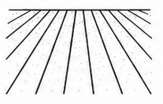 |
Maize, winter wheat, cotton, soybean, canola. | Dynamic canopy occlusion and varying phenological stages throughout the season. | Moderate to High: Highly dependent on growth stage; requires multi-sensor fusion to mitigate canopy background noise. | (Chu et al., 2026; He et al., 2025; Liu et al., 2024) |
| Orchards & Vineyards 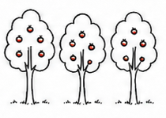 |
Citrus, pomegranate, poplar, vineyards. | Complex 3D architecture, shading effects, and inter-row bare soil mixing. | Moderate: Feasible but complex; requires 3D shadow compensation, pure-pixel extraction, or energy balance approaches. | (Chandel et al., 2021; Liu et al., 2026; Niu et al., 2022) |
| Grasslands & Pastures 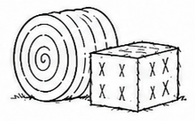 |
Mown, grazed, and permanent pastures. | Thatch layer accumulation and rapid temporal alteration of plant traits. | Moderate to Low: Heavily hampered by dead biomass; necessitates complex radiative transfer models (RTMs) to decouple the signal. | (Döpper et al., 2022; Ye et al., 2024) |
SMC retrieval accuracy and operational feasibility vary significantly across different agricultural land cover types (Table 10). Over bare soils, estimation models typically exhibit high precision due to the absence of vegetation-induced signal distortion and canopy shadowing. Under these conditions, surface roughness and micro-topographic variations represent the primary physical confounding factors. Specifically, Shokati et al. (2025) demonstrated that various machine learning algorithms consistently yield superior SMC prediction accuracy over bare soils compared to cultivated fields or grasslands. Similarly, early-season flight campaigns over uncultivated land allow the direct observation of spectral and thermal contrasts associated with soil drainage and moisture anomalies, which are subsequently obscured as the crop canopy develops (Zajc et al., 2023). For active microwave sensing, the absence of vegetation simplifies backscatter modeling by eliminating canopy volume scattering; physically-based approaches, such as the Integral Equation Model (IEM), can thus be applied directly to retrieve surface soil moisture without the need for vegetation corrections (Chakhar et al., 2021). Under bare soil conditions, radar backscatter is governed strictly by the soil’s dielectric properties and surface roughness, stabilizing model inversion (Chakhar et al., 2021; Shokati et al., 2025).
For arable croplands, soil moisture retrieval becomes more complex due to rapid canopy development and phenological changes throughout the growing season (Chen et al., 2024; Chu et al., 2026; Du et al., 2024). To mitigate canopy interference and capture these highly dynamic states, modern frameworks increasingly rely on multi-source data fusion (Chu et al., 2026; He et al., 2025; Liu et al., 2024). The physical limitations of modeling dynamically developing crop canopies are well illustrated by Chakhar et al. (2021) using a combined IEM and Water Cloud Model (WCM) framework. While the combined model reliably estimates soil moisture during early phenological stages (such as barley stem elongation or early pea leaf development), subsequent canopy closure and aboveground biomass accumulation cause severe C-band microwave attenuation. In advanced growth stages—such as fully developed, dense onion canopies—volume scattering within the vegetation layer dominates the radar signal, drastically reducing backscatter sensitivity to soil moisture and impairing model performance (Chakhar et al., 2021).
In woody crops, such as orchards and vineyards, different structural challenges arise. The complex 3D architecture of these stands introduces pronounced canopy shadowing and leads to mixed pixels containing both tree crowns and bare soil, which complicates radiometric calibration (Chandel et al., 2021; Liu et al., 2026; Niu et al., 2022). Similarly, soil moisture retrieval over grasslands is heavily hampered by rapid biomass turnover and the accumulation of a dead organic layer (thatch) (Döpper et al., 2022; Ye et al., 2024). Specifically, Döpper et al. (2022) demonstrated that physically-based retrieval of the soil brightness factor via radiative transfer model (PROSAIL) inversion is only viable at low leaf area index (LAI) values and in the absence of a thatch layer. In permanent grasslands, this thick organic layer completely obscures the soil surface, preventing direct optical detection of soil moisture variations even under sparse canopy conditions (Döpper et al., 2022).
Methods
| Methodological Approach | Specific Algorithms / Models | Typical Validation Accuracy | Representative References |
|---|---|---|---|
| Machine Learning (ML) & Ensembles | RF, SVM, XGBoost, PLSR, Stacking Ensembles. | High (R²: 0.70–0.97); robust for multi-sensor data fusion but prone to overfitting. | (Chu et al., 2026; Feng et al., 2025; Yin et al., 2024) |
| Deep Learning (DL) | 1D-CNN, LSTM, BPNN, Attention Mechanisms. | Very High (R²: > 0.90); excels in modeling complex non-linear time-series relationships. | (He et al., 2026; Liu et al., 2026; Zhang et al., 2025) |
| Physical & Energy Balance | TSEB, SEBAL, METRIC. | Moderate to High; absolute dependence on accurate meteorological forcing data. | (Basurto-Lozada et al., 2020; Chandel et al., 2021; Tauro et al., 2022) |
| Radiative Transfer & Hybrid Models | PROSAIL, OPTRAM, WCM, MARMIT. | Variable (R²: 0.40–0.84); physically interpretable but inversion process is computationally complex. | (Chakhar et al., 2021; Döpper et al., 2022; Du et al., 2024) |
Methods for estimating SMC range from empirical, data-driven algorithms to physically-based models (Table 11). Data-driven methods, such as machine learning, are highly flexible and can easily combine multiple data types without requiring physical parameters (Chu et al., 2026; Feng et al., 2025; Yin et al., 2024). However, because these empirical models do not incorporate physical laws, they are prone to overfitting and often perform poorly when applied to new locations or times (Feng et al., 2025). Deep learning models excel at capturing complex temporal patterns from time-series data, but their black-box nature requires large calibration datasets (He et al., 2026; Liu et al., 2026; Zhang et al., 2025).
Conclusions, Limitations and Perspectives
- Open landscape and Heterogeneity
- Microclimate changes
The overview in Table 12 and its graphical representation in Figure 6 summarize the evolution of key themes and methodological approaches during the 2019–2026 period. The reviewed studies indicate a gradual shift from the validation of individual sensor systems toward multimodal data fusion, more advanced analytical methods, and the standardization of methodological and data-related procedures.
Several key publications describe UAVs as an effective means of bridging the gap between in situ point measurements and satellite remote sensing (Döpper et al., 2022; Hussain et al., 2025). The cited studies identify high spatial resolution, often on the order of centimeters, as one of the main advantages of UAV-based sensing, as it enables the capture of within-plot variability, local microclimatic conditions, and hydrologically stressed zones (Hussain et al., 2025; Pacheco Gil et al., 2025). High operational flexibility is also reported as an important advantage of UAV-based data acquisition (Chen et al., 2024).
At the same time, published studies highlight a number of technical, physical, and methodological limitations. Regarding flight platforms, these primarily include limited battery capacity, payload constraints for heavier microwave or LiDAR sensors, and regulatory restrictions associated with Visual Line of Sight (VLOS) operations (Chávez et al., 2020; Young et al., 2025). For passive optical and thermal sensors, the reviewed studies identify limited sensitivity beyond the immediate surface layer or upper part of the vegetation canopy as an important physical constraint (Bhatti et al., 2020; Yin et al., 2024). Sensor outputs can also be influenced by variations in solar illumination, shading, and atmospheric conditions during flight (Inocencio et al., 2025; Niu et al., 2022).
From a methodological perspective, the reviewed literature points to several recurring challenges, including inconsistent radiometric calibration (Chávez et al., 2020), the absence of standardized flight protocols (Zhuang et al., 2023), inconsistencies in semantic ontologies (García-Rodríguez et al., 2026), and limited transferability of empirical and data-driven models across locations and crops (Döpper et al., 2022).
Recent publications increasingly focus on combining individual sensors and integrating multiple data sources. Approaches currently being explored include autonomous UAV swarms (Young et al., 2025) and the integration of UAVs with ground-based robotic systems (UAV–UGV) (Zhang et al., 2025). In data processing, several recent studies employ multimodal fusion of sensor inputs, including combinations of MS, TIR, and 3D CHM data, often together with deep learning methods (Chu et al., 2026; Shi et al., 2025). Other recent developments include the use of physics-informed models (Shokati et al., 2025), transfer learning to improve model transferability (Liu et al., 2026), and formal semantic ontologies, such as SOSA/SSN, for integrating heterogeneous data streams (García-Rodríguez et al., 2026).
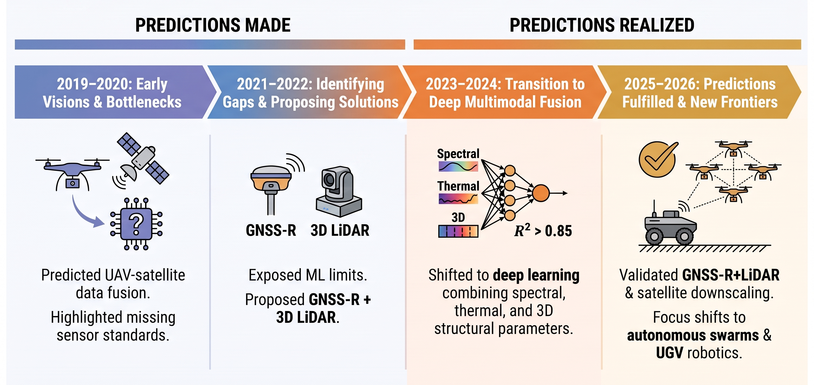
| Period | Key representative studies | Main conclusions regarding platforms, sensors, and methods | Outlook and subsequent developments |
|---|---|---|---|
| 2019–2020 | (Basurto-Lozada et al., 2020; Chávez et al., 2020; Zappa et al., 2019) | Early validation of UAV-based L-band radiometers and TIR+MS cameras. Main conclusion: UAVs showed potential for precision irrigation applications, while regulatory constraints and the lack of standardized sensor and processing procedures were identified as important limitations. | Outlook: BVLOS operations, camera standardization, and UAV–satellite data fusion. Subsequent developments: UAV–satellite fusion has been increasingly reported in recent studies, while standardization frameworks continue to be proposed (García-Rodríguez et al., 2026). |
| 2021–2022 | (Chakhar et al., 2021; Döpper et al., 2022; Senyurek et al., 2022; Tauro et al., 2022) | RTK-based workflows reduced the dependence on GCPs, while UAV-based GNSS-R emerged as an additional sensing approach. Main conclusion: Several studies identified limited model generalizability across locations as an important challenge for data-driven approaches. | Outlook: Integration of GNSS-R with LiDAR for surface-roughness correction and development of larger open datasets. Subsequent developments: Recent studies have demonstrated the integration of GNSS-R and LiDAR (Farhad et al., 2025; Rafi et al., 2026). |
| 2023–2024 | (Du et al., 2024; Yin et al., 2024; Zhang et al., 2023; Zhuang et al., 2023) | Main conclusion: Limitations of standalone sensors led to increasing interest in multimodal data fusion, including combinations of MS, TIR, and 3D CHM data, together with machine-learning and deep-learning approaches. | Outlook: Linking spectral information with plant physiological responses and developing more standardized flight protocols. Subsequent developments: Recent studies have applied multimodal fusion and advanced learning approaches in this context (Chu et al., 2026; Shi et al., 2025). |
| 2025–2026 | (Farhad et al., 2025; García-Rodríguez et al., 2026; Liu et al., 2026; Shi et al., 2025; Shokati et al., 2025; Young et al., 2025; Zhang et al., 2025) | Recent studies increasingly focus on multimodal data fusion and approaches aimed at improving model transferability and interpretability, including transfer learning and SHAP-based analysis. | Emerging directions: Autonomous UAV swarms, UAV–UGV integration, physics-informed models such as MARMIT, and formal semantic ontologies such as SOSA/SSN. |
Recent studies have examined the use of UAV-based thermal infrared (TIR) remote sensing for soil moisture modelling and crop water stress detection (Niu et al., 2022; Tauro et al., 2022). These studies report relationships between thermally derived indicators, including the crop water stress index (CWSI), evapotranspiration, and soil moisture conditions. At the same time, several authors identify limitations related to temperature measurement accuracy, meteorological conditions, and flight configuration (Chávez et al., 2020).
Temperature measurement accuracy is frequently discussed in relation to the use of uncooled microbolometers. Thermal drift during flight has been reported as a potential source of error in absolute temperature measurements (Chávez et al., 2020; Yin et al., 2024). Proposed approaches to reduce this effect include pre-flight sensor stabilisation and the use of ground-based calibration targets (Basurto-Lozada et al., 2020; Chávez et al., 2020). Other studies have used relative thermal indicators, such as the normalised relative canopy temperature (NRCT), to reduce sensitivity to environmental variability (Chu et al., 2026; Yin et al., 2024).
Meteorological conditions are another frequently reported source of variability in TIR measurements. Atmospheric effects may increase with flight altitude, while wind speed, relative humidity, and solar radiation can influence the recorded thermal signal (Basurto-Lozada et al., 2020; Capolupo et al., 2026). However, these variables are not consistently incorporated into retrieval models across the reviewed studies.
Flight altitude and speed are also reported as important operational parameters. The lower spatial resolution of thermal cameras compared with optical sensors can increase mixed-pixel effects at greater flight altitudes (Bhatti et al., 2020; Chávez et al., 2020). This may complicate the separation of canopy and soil temperatures (Tauro et al., 2022). Flight speed is additionally constrained by sensor acquisition characteristics and the image overlap required for thermal orthomosaic generation (Chávez et al., 2020).
The reviewed studies propose several directions for addressing these limitations. These include more consistent radiometric calibration procedures (Chávez et al., 2020) and the integration of TIR data with multispectral imagery or 3D LiDAR data to improve the separation of vegetation and soil signals (Döpper et al., 2022; Shi et al., 2025).
Discussion
Major Findings
As this review indicates, UAS are being used with increasing frequency for soil moisture monitoring. Their primary advantages include the ability to be deployed rapidly, the capacity to bridge the spatial gap between in-situ point measurements and satellite data, and the rapid technological evolution of both the platforms and the sensors themselves. This evolution is also evident in experimental design, which is gradually shifting from simple approaches toward more complex, multi-sensor methodologies. Concurrently, the application of machine learning and deep learning methods is expanding, enabling the processing of larger, more complex datasets and the integration of diverse types of input data.
Current Limitations
Despite these developments, several technical and operational limitations persist. One of these is limited battery capacity, which restricts the duration of individual flight missions. Another limitation is the payload capacity of the UAV, particularly when heavier sensors or more extensive multi-sensor arrays are employed. Furthermore, practical application may be constrained by legislation—specifically, requirements associated with operations conducted within the line of sight (VLOS).
Future Research Directions and Implications
The dataset points to several directions for future research. These include the use of autonomous UAV swarms, the integration of UAVs with ground-based robotics (UGVs), the development of microwave sensors, and the broader application of artificial intelligence methods in combination with physical models.
However, given the growing importance of multi-sensor experiments and the integration of diverse data sources, standardization at both the semantic and data levels will be essential. Such standardization can facilitate the comparison of experiments across different locations, enhance the transferability of methods, and support the automation of data processing through advanced techniques (machine learning, deep learning, and artificial intelligence). Current research also places a strong emphasis on comparing various advanced models and identifying optimal combinations of input data. In this context, the use of different types of neural networks has expanded significantly. Further progress in this field will likely depend on better integration of UAVs with other sources of spatial and terrain data, as well as the application of scaling and data-fusion methods—enabling the broader transfer of results across different locations and experimental conditions.
Operational Applicability of UAV Soil Moisture Monitoring
Developments in recent years show that UAVs represent a technically advanced platform with potential for practical application in precision agriculture. Among the most frequently discussed applications are support for irrigation management and the detection of water stress in crops. However, broader operational use will depend on further improvements in the standardization of measurements, the transferability of models, and the reliability of data processing.
Conclusion
This review summarizes publications from the 2019–2026 period focused on the use of UAVs for soil moisture monitoring. In recent years, research has shifted from general assessments of the capabilities of UAVs and individual sensors toward more complex approaches based on a combination of multiple sensors, data sources, and advanced analytical methods.
Furthermore, the results indicate that the future development of this field will depend not only on technological advancements in sensors and UAV platforms but also on the standardization of measurements and data, improved model transferability, and more effective integration of UAV data with other sources of spatial and field data. In Online Resource 16, the required information is categorized based on its importance and applicability. Core represents the minimum requirement for any published drone dataset. Quantitative applies to datasets where pixel values are used as actual measurements (e.g., reflectance, surface temperature). Full is intended for reference datasets and long-term monitoring. This comprehensive specification integrates the OpenSkyLab Data Metadata Specification and Template (v0.2, 2026) and the ASPRS Positional Accuracy Standards for Digital Geospatial Data (Edition 2, Version 2.0, 2024) (Abdullah et al., 2024). It encompasses all Core, Quantitative, Full, and ASPRS Geodetic parameters. Additionally, Online Resource 17 outlines further mandatory information specific to soil moisture monitoring. These requirements are derived from a set of key articles that served as the foundation for this review.
Limitations of Review
This study has several limitations. First, the automated screening approach relies on keyword-based classification, which may not capture all nuances of study relevance. Second, the dataset is biased toward satellite-based studies, reflecting both the structure of the search query and the current state of the field. Finally, relevance scoring does not replace expert judgment and was used only to support manual screening. Additionally, the classification of potential UAV applicability is based on rule-based inference and may not fully capture all transferable methodological aspects.
Acknowledgments
The authors state that generative artificial intelligence tools were used in the preparation of the manuscript solely to support project organization, work with literature and data, and preparation of visual materials, and formal requirements review, not to create scientific content. Specifically, Cursor (Anysphere, 2026) was used to manage the project structure, connect local files to the GitHub repository, coordinate data folders and scripts within the framework of the systematic review, and for final manucript review before submission; Gemini Notebook (Google, 2026) was used to more quickly navigate the extensive literature and to support the completion of summary tables from already selected studies, and check the manuscript for compilance with PRISMA 2020 guidelines and requirements of target journal; and ChatGPT (OpenAI, 2026), Gemini Notebook (Google, 2026) with Napkin AI (Second layer, 2026) was used to generate illustrative images and icons used in the manuscript. These tools were not used to design research questions, collect data, perform statistical analysis, or formulate scientific conclusions. All scientific content of the manuscript was created by the authors independently. The final text was reviewed and approved by all authors, who bear full responsibility for the integrity, originality, and correctness of the work.
Statements and Declarations
Funding This work was supported by the IGA grant from the Faculty of Environmental Sciences at the Czech University of Life Sciences Prague, grant number 2026B0015.
Competing Interests The authors have no relevant financial or non-financial interests to disclose.
Author Contributions Conceptualization: Lenka Miková, Elena Scholtz; Methodology: Lenka Miková, Elena Scholtz; Investigation: Lenka Miková; Formal analysis: xxx; Data curation: Lenka Miková; Visualization: Lenka Miková; Writing - original draft preparation: Lenka Miková, Jiří Rous, Jan Komárek; Writing - review and editing: Elena Scholtz, Lenka Miková, Jan Komárek; Funding acquisition: Lenka Miková.
Data Availability The datasets generated and analysed during the current study are available in the UAS-review GitHub repository.
References
Abdullah, Q., Munjy, R., Nimetz, J., Zoltek, M., Lee, C., 2024. ASPRS Positional Accuracy Standards for Digital Geospatial Data. ASPRS. https://doi.org/10.14358/ASPRS.PAS.2024
Abdulraheem, M.I., Chen, H., Li, L., Moshood, A.Y., Zhang, W., Xiong, Y., Zhang, Y., Taiwo, L.B., Farooque, A.A., Hu, J., 2024. Recent Advances in Dielectric Properties-Based Soil Water Content Measurements. Remote Sensing 16, 1328. https://doi.org/10.3390/rs16081328
Acharya, B.S., Bhandari, M., Bandini, F., Pizarro, A., Perks, M., Joshi, D.R., Wang, S., Dogwiler, T., Ray, R.L., Kharel, G., Sharma, S., 2021. Unmanned Aerial Vehicles in Hydrology and Water Management: Applications, Challenges, and Perspectives. Water Resources Research 57, e2021WR029925. https://doi.org/10.1029/2021WR029925
Ali, A., Hassan, M., Kaul, H.-P., 2024. Broad Scope of Site-Specific Crop Management and Specific Role of Remote Sensing Technologies Within It—A Review. Journal of Agronomy and Crop Science 210, 12732. https://doi.org/10.1111/jac.12732
Awais, M., Li, W., Cheema, M.J.M., Zaman, Q.U., Shaheen, A., Aslam, B., Zhu, W., Ajmal, M., Faheem, M., Hussain, S., Nadeem, A.A., Afzal, M.M., Liu, C., 2023. UAV-based remote sensing in plant stress imagine using high-resolution thermal sensor for digital agriculture practices: A meta-review. International Journal of Environmental Science and Technology 20, 1135–1152. https://doi.org/10.1007/s13762-021-03801-5
Babaeian, E., Sadeghi, M., Jones, S.B., Montzka, C., Vereecken, H., Tuller, M., 2019. Ground, Proximal, and Satellite Remote Sensing of Soil Moisture. Reviews of Geophysics 57, 530–616. https://doi.org/10.1029/2018RG000618
Balathandayutham, D.S., Ramalingam, K., Dhanaraju, M., Narayanasamy, C., Shanmugam, K., 2025. Harnessing remote sensing for smart agriculture. Plant Science Today 12. https://doi.org/10.14719/pst.9174
Basurto-Lozada, D., Hillier, A., Medina, D., Pulido, D., Karaman, S., Salas, J., 2020. Dynamics of soil surface temperature with unmanned aerial systems. Pattern Recognition Letters 138, 68–74. https://doi.org/10.1016/j.patrec.2020.07.003
Bazrafkan, A., Igathinathane, C., Bandillo, N., Flores, P., 2025. Optimizing integration techniques for UAS and satellite image data in precision agriculture — a review. Frontiers in Remote Sensing 6. https://doi.org/10.3389/frsen.2025.1622884
Bhatti, S., Heeren, D.M., Barker, J.B., Neale, C.M.U., Woldt, W.E., Maguire, M.S., Rudnick, D.R., 2020. Site-specific irrigation management in a sub-humid climate using a spatial evapotranspiration model with satellite and airborne imagery. Agricultural Water Management 230, 105950. https://doi.org/10.1016/j.agwat.2019.105950
Bogena, H.R., Weuthen, A., Huisman, J.A., 2022. Recent Developments in Wireless Soil Moisture Sensing to Support Scientific Research and Agricultural Management. Sensors 22. https://doi.org/10.3390/s22249792
Capolupo, A., Gioia, A., Agnusdei, G.P., Miglietta, P.P., Iannone, R., Tarantino, E., 2026. Earth Observation Big Data for Soil Moisture Estimation Techniques in Precision Viticulture, in: Gervasi, O., Murgante, B., Garau, C., Karaca, Y., Faginas Lago, M.N., Scorza, F., Braga, A.C. (Eds.), Computational Science and Its Applications – ICCSA 2025 Workshops. Springer Nature Switzerland, Cham, pp. 222–237. https://doi.org/10.1007/978-3-031-97617-9_15
Chakhar, A., Hernández-López, D., Ballesteros, R., Moreno, M.A., 2021. Improvement of the Soil Moisture Retrieval Procedure Based on the Integration of UAV Photogrammetry and Satellite Remote Sensing Information. Remote Sensing 13, 4968. https://doi.org/10.3390/rs13244968
Chandel, A.K., Khot, L.R., Molaei, B., Peters, R.T., Stöckle, C.O., Jacoby, P.W., 2021. High-Resolution Spatiotemporal Water Use Mapping of Surface and Direct-Root-Zone Drip-Irrigated Grapevines Using UAS-Based Thermal and Multispectral Remote Sensing. Remote Sensing 13, 954. https://doi.org/10.3390/rs13050954
Chaparro, J.E., Aedo, J.E., Lumbreras Ruiz, F., 2024. Machine Learning for the estimation of foliar nitrogen content in pineapple crops using multispectral images and Internet of Things (IoT) platforms. Journal of Agriculture and Food Research 18, 101208. https://doi.org/10.1016/j.jafr.2024.101208
Chávez, J.L., Torres-Rua, A.F., Woldt, W.E., Zhang, H., Robertson, C.C., Marek, G.W., Wang, D., Heeren, D.M., Taghvaeian, S., Neale, C.M.U., 2020. A Decade of Unmanned Aerial Systems in Irrigated Agriculture in the Western U.S. Applied Engineering in Agriculture 36, 423–436. https://doi.org/10.13031/aea.13941
Chen, Z., Chen, H., Dai, Q., Wang, Y., Hu, X., 2024. Estimation of Soil Moisture during Different Growth Stages of Summer Maize under Various Water Conditions Using UAV Multispectral Data and Machine Learning. Agronomy 14. https://doi.org/10.3390/agronomy14092008
Choudhari, A., Bhoyar, D., Badole, W.P., 2024. Design of an IoT based Monitoring System Utilizing Deep Reinforcement Learning and Ensemble Learning for Precision Agriculture, in: Int. Conf. Sustain. Comput. Smart Syst., ICSCSS - Proc. Institute of Electrical and Electronics Engineers Inc., pp. 845–852. https://doi.org/10.1109/ICSCSS60660.2024.10625266
Chu, C., Ma, Z., Li, Z., Hu, Y., Li, T., Zhao, J., Li, J., Li, X., Wang, Z., Wu, W., 2026. Enhancing multi-stage and multi-depth soil moisture estimation in winter wheat fields with UAV remote sensing fusion and ensemble learning strategy. Ecological Indicators 183, 114651. https://doi.org/10.1016/j.ecolind.2026.114651
Dong, H., Dong, J., Sun, S., Bai, T., Zhao, D., Yin, Y., Shen, X., Wang, Y., Zhang, Z., Wang, Y., 2024. Crop water stress detection based on UAV remote sensing systems. Agricultural Water Management 303. https://doi.org/10.1016/j.agwat.2024.109059
Döpper, V., Rocha, A.D., Berger, K., Gränzig, T., Verrelst, J., Kleinschmit, B., Förster, M., 2022. Estimating soil moisture content under grassland with hyperspectral data using radiative transfer modelling and machine learning. International Journal of Applied Earth Observation and Geoinformation 110, 102817. https://doi.org/10.1016/j.jag.2022.102817
Du, R., Xiang, Y., Zhang, F., Chen, J., Shi, H., Liu, H., Yang, X., Yang, N., Yang, X., Wang, T., Wu, Y., 2024. Combing transfer learning with the OPtical TRApezoid Model (OPTRAM) to diagnosis small-scale field soil moisture from hyperspectral data. Agricultural Water Management 298, 108856. https://doi.org/10.1016/j.agwat.2024.108856
Ezenne, G.I., Jupp, L., Mantel, S.K., Tanner, J.L., 2019. Current and potential capabilities of UAS for crop water productivity in precision agriculture. Agricultural Water Management 218, 158–164. https://doi.org/10.1016/j.agwat.2019.03.034
Farhad, M.M., Senyurek, V., Rafi, M.A.S., Baray, S.B., McCraine, C., Hathcock, L.A., Adeli, A., Yanbo, H., Gurbuz, A.C., Kurum, M., 2025. Integrating UAS-Based GNSS-R, LiDAR, and Multispectral Data for Soil Moisture Estimation: Summary of Results from a Three-Year-Long Field Campaign. IEEE Journal of Selected Topics in Applied Earth Observations and Remote Sensing 18, 16896–16915. https://doi.org/10.1109/JSTARS.2025.3580114
Feng, Z., Yang, Z., Suo, L., Wu, K., Ma, Z., Zhang, H., Duan, J., Feng, W., 2025. Enhancing maize above-ground biomass estimation through multispectral, digital and LiDAR fusion on UAV platforms. Agricultural Water Management 315, 109551. https://doi.org/10.1016/j.agwat.2025.109551
García-Rodríguez, D., Samper-Zapater, J.J., Gutiérrez-Moret, J., Catret-Ruber, P., Martínez, B., Pérez-Hoyos, A., López-Baeza, E., Martínez-Durá, J.J., 2026. Data Semantics for Earth Observation: A technical guide to ontology-based integration for environmental data monitoring. IEEE Geoscience and Remote Sensing Magazine 14, 104–130. https://doi.org/10.1109/MGRS.2026.3667059
Guo, J., Bai, Q., Guo, W., Bu, Z., Zhang, W., 2022. Soil moisture content estimation in winter wheat planting area for multi-source sensing data using CNNR. Computers and Electronics in Agriculture 193, 106670. https://doi.org/10.1016/j.compag.2021.106670
Haokip, S.C., Rajwade, Y.A., Rao, K.V.R., Kumar, S.P., Marak, A.B., Srivastava, A., 2025. Approaches for Assessment of Soil Moisture with Conventional Methods, Remote Sensing, UAV, and Machine Learning Methods—A Review. Water (Switzerland) 17. https://doi.org/10.3390/w17162388
He, J., Jia, Y., Li, Y., Biswas, A., Feng, H., Yu, Q., Wu, S., Yang, G., Siddique, Kadambot.H.M., 2025. Regional-scale precision mapping of cotton suitability using UAV and satellite data in arid environments. Agricultural Water Management 307, 109215. https://doi.org/10.1016/j.agwat.2024.109215
He, J., Zhao, L., Li, W., Wang, Z., Liu, Y., Liu, Q., Pan, S., Yan, F., Niu, Z., Zhang, D., Roussos, P.A., 2026. Soil Moisture Estimation in Kiwifruit Root Zones Using ATT-LSTM Based on UAV and Meteorological Data. Horticulturae 12, 291. https://doi.org/10.3390/horticulturae12030291
Heistermann, M., Francke, T., Scheiffele, L., Dimitrova Petrova, K., Budach, C., Schrön, M., Trost, B., Rasche, D., Güntner, A., Döpper, V., Förster, M., Köhli, M., Angermann, L., Antonoglou, N., Zude-Sasse, M., Oswald, S.E., 2023. Three years of soil moisture observations by a dense cosmic-ray neutron sensing cluster at an agricultural research site in north-east Germany. Earth System Science Data 15, 3243–3262. https://doi.org/10.5194/essd-15-3243-2023
Huang, L., Zheng, S., Elshobary, M., Li, T., Liu, W., Xu, X., Hu, X., Zhu, F., El-Sheekh, M., Huo, S., 2026. Advances and prospects of closed-loop precision irrigation for synergistic water-salt-phosphorus regulation in saline-alkali soils. Agricultural Water Management 325. https://doi.org/10.1016/j.agwat.2026.110187
Hussain, S., Arshad, M., Cheema, M.J.M., Qamar, M.U., Wajid, S.A., Daccache, A., 2025. Advancing Soil Moisture Prediction Using Satellite and UAV-based Imagery with Machine Learning Models. Earth Systems and Environment. https://doi.org/10.1007/s41748-025-00761-5
Inocencio, L.C., dos Reis, B.S., Tognoli, F.M.W., Moreira, C.A., Diniz, J.L., 2025. Soil Moisture Acquisition Through Multispectral Sensors Coupled to Unmanned Aerial Vehicle (UAV), in: Dig Int Geosci Remote Sens Symp (IGARSS). Institute of Electrical and Electronics Engineers Inc., pp. 3984–3987. https://doi.org/10.1109/IGARSS55030.2025.11242585
Jeziorska, J., 2019. UAS for Wetland Mapping and Hydrological Modeling. Remote Sensing 11, 1997. https://doi.org/10.3390/rs11171997
Keshavarz, R., Okudaira, T., Shariati, N., 2025. Dynamic Soil Moisture Estimation Using BLE RSSI Signals: A Machine Learning-Based Framework for Real-Time Monitoring and Flood Detection. IEEE Transactions on Geoscience and Remote Sensing 63. https://doi.org/10.1109/TGRS.2025.3612100
Kuunya, R., Osman, M.M.A., Ssemugenze, B., Gumisiriya, C., Ragán, P., 2025. Soil moisture sensors for sustainable water management in field crop production: A review of advances and application challenges. Acta Agraria Debreceniensis 41–54. https://doi.org/10.34101/actaagrar/2/16097
Li, W., Awais, M., Ru, W., Shi, W., Ajmal, M., Uddin, S., Liu, C., 2020. Review of Sensor Network-Based Irrigation Systems Using IoT and Remote Sensing. Advances in Meteorology 2020. https://doi.org/10.1155/2020/8396164
Liu, H., Chen, J., Xiang, Y., Geng, H., Yang, X., Yang, N., Du, R., Wang, Y., Zhang, Z., Shi, L., Zhang, F., 2024. Improving UAV hyperspectral monitoring accuracy of summer maize soil moisture content with an ensemble learning model fusing crop physiological spectral responses. European Journal of Agronomy 160, 127299. https://doi.org/10.1016/j.eja.2024.127299
Liu, Q., Wang, M., Cui, N., Zheng, S., Wu, Z., Jiang, S., Wang, Z., Gong, D., Zhao, L., Xing, L., Zhu, G., 2026. Cross-regional estimation of leaf chlorophyll and soil moisture content in drip-irrigated citrus orchards using UAV data and transfer learning. Agricultural Water Management 328, 110317. https://doi.org/10.1016/j.agwat.2026.110317
Loconsole, D., Elia, M., Conversa, G., De Lucia, B., Cristiano, G., Elia, A., 2025. Soil Moisture Sensing Technologies: Principles, Applications, and Challenges in Agriculture. Agronomy 15. https://doi.org/10.3390/agronomy15122788
Mkhwenkwana, A., Matongera, T.N., Blaauw, C., Mutanga, O., 2025. A critical review on the applications of Sentinel satellite datasets for soil moisture assessment in crop production. International Journal of Applied Earth Observation and Geoinformation 141. https://doi.org/10.1016/j.jag.2025.104647
Montzka, C., Brocca, L., Chen, H., Das, N.N., Dasgupta, A., Rahmati, M., Jagdhuber, T., 2026. AI in soil moisture remote sensing. International Journal of Applied Earth Observation and Geoinformation 146, 105011. https://doi.org/10.1016/j.jag.2025.105011
Mowla, Md.N., Mowla, N., Chowdhury, S.R., Rabie, K.M., Shongwe, T., 2026. Unmanned aerial vehicles (UAVs) for smart agriculture with machine learning: A system-oriented review of methods, applications, and challenges. Smart Agricultural Technology 13, 101880. https://doi.org/10.1016/j.atech.2026.101880
Niu, H., Zhao, T., Wang, D., Chen, Y., 2022. Estimating Evapotranspiration of Pomegranate Trees Using Stochastic Configuration Networks (SCN) and UAV Multispectral Imagery. Journal of Intelligent and Robotic Systems: Theory and Applications 104. https://doi.org/10.1007/s10846-022-01588-2
Niu, S., Nie, Z., Li, G., Zhu, W., Liu, J., 2025. Quantitative Analysis of the Relationship Between Maize Seedling Phenotypes and Soil Moisture Monitored by UAV RGB Imagery. IEEE Sensors Journal 25, 24387–24395. https://doi.org/10.1109/JSEN.2025.3569297
P, H., Gautam, S., Joshi, S.K., Asirvatham, L.G., Rakshith, B.L., 2025. Advancements in soil moisture estimation through integration of remote sensing and artificial intelligence techniques. Science of The Total Environment 1001, 180503. https://doi.org/10.1016/j.scitotenv.2025.180503
Pablos, M., Portal, G., Camps, A., Vall-Llossera, M., López-Martínez, C., 2025. Advances in Soil Moisture Mapping Techniques and Disaggregation Algorithms for Environmental and Agricultural Applications, in: Int. Arch. Photogramm., Remote Sens. Spat. Inf. Sci. - ISPRS Arch. International Society for Photogrammetry and Remote Sensing, pp. 1139–1146. https://doi.org/10.5194/isprs-archives-XLVIII-G-2025-1139-2025
Pacheco Gil, H., Delgado Marcillo, C., Delgado Alcívar, R., Fernández Zambrano, L., Caal, N., Jarre, E., 2025. Remote sensing applied for the estimation of crop coefficient and detection of forest cover changes. Revista de la Facultad de Agronomía de la Universidad del Zulia 42, e254211–e254211.
Page, M.J., McKenzie, J.E., Bossuyt, P.M., Boutron, I., Hoffmann, T.C., Mulrow, C.D., Shamseer, L., Tetzlaff, J.M., Akl, E.A., Brennan, S.E., Chou, R., Glanville, J., Grimshaw, J.M., Hróbjartsson, A., Lalu, M.M., Li, T., Loder, E.W., Mayo-Wilson, E., McDonald, S., McGuinness, L.A., Stewart, L.A., Thomas, J., Tricco, A.C., Welch, V.A., Whiting, P., Moher, D., 2021a. The PRISMA 2020 statement: An updated guideline for reporting systematic reviews. BMJ n71. https://doi.org/10.1136/bmj.n71
Page, M.J., Moher, D., Bossuyt, P.M., Boutron, I., Hoffmann, T.C., Mulrow, C.D., Shamseer, L., Tetzlaff, J.M., Akl, E.A., Brennan, S.E., Chou, R., Glanville, J., Grimshaw, J.M., Hróbjartsson, A., Lalu, M.M., Li, T., Loder, E.W., Mayo-Wilson, E., McDonald, S., McGuinness, L.A., Stewart, L.A., Thomas, J., Tricco, A.C., Welch, V.A., Whiting, P., McKenzie, J.E., 2021b. PRISMA 2020 explanation and elaboration: Updated guidance and exemplars for reporting systematic reviews. BMJ n160. https://doi.org/10.1136/bmj.n160
Peng, J., Albergel, C., Balenzano, A., Brocca, L., Cartus, O., Cosh, M.H., Crow, W.T., Dabrowska-Zielinska, K., Dadson, S., Davidson, M.W.J., de Rosnay, P., Dorigo, W., Gruber, A., Hagemann, S., Hirschi, M., Kerr, Y.H., Lovergine, F., Mahecha, M.D., Marzahn, P., Mattia, F., Musial, J.P., Preuschmann, S., Reichle, R.H., Satalino, G., Silgram, M., van Bodegom, P.M., Verhoest, N.E.C., Wagner, W., Walker, J.P., Wegmüller, U., Loew, A., 2021. A roadmap for high-resolution satellite soil moisture applications – confronting product characteristics with user requirements. Remote Sensing of Environment 252, 112162. https://doi.org/10.1016/j.rse.2020.112162
Rafi, M.A.S., Senyurek, V., Adeli, A., Yanbo, H., Ball, J.E., Gurbuz, A.C., 2026. Investigation of machine learning based techniques for crop yield estimation of corn and cotton using multi-sensor data fusion. Journal of Agriculture and Food Research 26, 102676. https://doi.org/10.1016/j.jafr.2026.102676
Saki, M., Keshavarz, R., Franklin, D., Abolhasan, M., Lipman, J., Shariati, N., 2025. A Data-Driven Review of Remote Sensing-Based Data Fusion in Precision Agriculture From Foundational to Transformer-Based Techniques. IEEE Access 13, 166188–166209. https://doi.org/10.1109/ACCESS.2025.3610649
Senyurek, V., Farhad, M.M., Gurbuz, A.C., Kurum, M., Adeli, A., 2022. Fusion of Reflected GPS Signals With Multispectral Imagery to Estimate Soil Moisture at Subfield Scale From Small UAS Platforms. IEEE Journal of Selected Topics in Applied Earth Observations and Remote Sensing 15, 6843–6855. https://doi.org/10.1109/JSTARS.2022.3197794
Shi, H., Xiang, Y., Tang, Z., Du, R., Sun, T., Liu, X., Huang, X., Li, Z., Zhang, F., 2025. Improving surface soil moisture content estimation of winter oilseed rape by integrating multimodal remote sensing information and structural characteristics. Computers and Electronics in Agriculture 237, 110779. https://doi.org/10.1016/j.compag.2025.110779
Shokati, H., Mashal, M., Noroozi, A., Mirzaei, S., Mohammadi-Doqozloo, Z., Nabiollahi, K., Taghizadeh-Mehrjardi, R., Khosravani, P., Adhikari, R., Hu, L., Scholten, T., 2025. Comparing UAV-Based Hyperspectral and Satellite-Based Multispectral Data for Soil Moisture Estimation Using Machine Learning. Water (Switzerland) 17. https://doi.org/10.3390/w17111715
Singh, R., Sharma, L., Singh, H., Zotarelli, L., 2026. Remote Sensing and Machine Learning for Irrigation Management in Potato Cultivation: A Systematic Review. American Journal of Potato Research 103, 1–16. https://doi.org/10.1007/s12230-025-10029-3
Soultane, O.B., Salih-Alj, Y., Et-taibi, B., 2024. Smart Agriculture Optimization: Integrating Edge Computing and AI for Enhanced Crop Management. Proceedings of the 2024 10th International Conference on Applied System Innovation, ICASI 2024 270–272. https://doi.org/10.1109/ICASI60819.2024.10547894
Tauro, F., Maltese, A., Giannini, R., Harfouche, A., 2022. Latent heat flux variability and response to drought stress of black poplar: A multi-platform multi-sensor remote and proximal sensing approach to relieve the data scarcity bottleneck. Remote Sensing of Environment 268, 112771. https://doi.org/10.1016/j.rse.2021.112771
Teixeira, A.C., Bakon, M., Lopes, D., Cunha, A., Sousa, J.J., 2025. A systematic review on soil moisture estimation using remote sensing data for agricultural applications. Science of Remote Sensing 12. https://doi.org/10.1016/j.srs.2025.100328
Tsaousidis, M., Kalampokas, T., Vrochidou, E., Papakostas, G.A., 2026. AI-Enabled Digital Twins in Agriculture. AI (Switzerland) 7. https://doi.org/10.3390/ai7030108
Wang, J., Yang, T., Zhu, W., Li, S., Tang, Z., Wan, W., Sun, Z., 2026. A novel approach for Quasi-Global daily continuous surface soil moisture downscaling at 500-m resolution using CYGNSS observations. International Journal of Applied Earth Observation and Geoinformation 146, 105137. https://doi.org/10.1016/j.jag.2026.105137
Wang, L.h., Guan, J.n., Wei, J., Rasheed, A., Mahmood, A., Hassan, M., Akram, M., Al-Khayri, J., Aldaej, M.i., Sattar, M., Rezk, A., Al Maghaslah, M., Shehata, W., Shalaby, T., 2024. THE ROLE OF REMOTE SENSING, GEOPHYSICS AND CROP MODELING IN IRRIGATION MANAGEMENT: REVIEW AND FUTURE PERSPECTIVE. Applied Ecology and Environmental Research 22, 373–394. https://doi.org/10.15666/aeer/2201_373394
Yadav, M., Vashisht, B.B., Vullaganti, N., Kumar, P., Jalota, S.K., Kumar, A., Kaushik, P., 2024. UAV-enabled approaches for irrigation scheduling and water body characterization. Agricultural Water Management 304. https://doi.org/10.1016/j.agwat.2024.109091
Yang, X., Chen, J., Lu, X., Liu, H., Liu, Y., Bai, X., Qian, L., Zhang, Z., 2025. Advances in UAV Remote Sensing for Monitoring Crop Water and Nutrient Status: Modeling Methods, Influencing Factors, and Challenges. Plants 14, 2544. https://doi.org/10.3390/plants14162544
Ye, N., Walker, J.P., Gao, Y., Popstefanija, I., Hills, J., 2024. Comparison between Thermal-Optical and L-Band Passive Microwave Soil Moisture Remote Sensing at Farm Scales: Towards UAV-Based Near-Surface Soil Moisture Mapping. IEEE Journal of Selected Topics in Applied Earth Observations and Remote Sensing 17, 633–642. https://doi.org/10.1109/JSTARS.2023.3329015
Yin, L., Yan, S., Li, M., Liu, W., Zhang, S., Xie, X., Wang, X., Wang, W., Chang, S., Hou, F., 2024. Enhancing soil moisture estimation in alfalfa root-zone using UAV-based multimodal remote sensing and deep learning. European Journal of Agronomy 161, 127366. https://doi.org/10.1016/j.eja.2024.127366
Young, C.J.C., Williams, H.J., Ferro, C.F., Wardour, E.F., Pask, E.N., Lee, S.-J., 2025. Advanced Crop Management and Health Assessment using Multispectral UAVs for Precision Agriculture, in: AIAA Aviat. Forum ASCEND. American Institute of Aeronautics and Astronautics Inc, AIAA. https://doi.org/10.2514/6.2025-3271
Zajc, M., Koroša, A., Urbanc, J., Rupar, L., Koçyigit, B., Krivic, A., Pecan, U., Glavan, M., 2023. GPR and UAV remote sensing for detecting changes in soil moisture across a heterogeneous agricultural field, in: Eur. Meet. Environ. Eng. Geophys., Held Near Surf. Geosci. Conf. Exhib., NSG. European Association of Geoscientists and Engineers, EAGE. https://doi.org/10.3997/2214-4609.202320145
Zappa, L., Forkel, M., Xaver, A., Dorigo, W., 2019. Deriving Field Scale Soil Moisture from Satellite Observations and Ground Measurements in a Hilly Agricultural Region. Remote Sensing 11, 2596. https://doi.org/10.3390/rs11222596
Zhang, J., Ding, J., Li, J., Zhang, Z., Wang, J., Ge, X., 2026. Daily estimation of Water–Salt–Carbon coordination in high-standard cotton fields using uav and PlanetScope satellite image fusion. Agricultural Water Management 327, 110282. https://doi.org/10.1016/j.agwat.2026.110282
Zhang, X., Feng, G., Sun, X., 2024. Advanced technologies of soil moisture monitoring in precision agriculture: A Review. Journal of Agriculture and Food Research 18. https://doi.org/10.1016/j.jafr.2024.101473
Zhang, X., Ram, B., Vullaganti, N., Aderholdt, W., Overby, P., Sun, X., 2025. Soil moisture classification using hyperspectral imaging and deep learning models on ground robot vehicles. Smart Agricultural Technology 12, 101413. https://doi.org/10.1016/j.atech.2025.101413
Zhang, Y., Han, W., Zhang, H., Niu, X., Shao, G., 2023. Evaluating soil moisture content under maize coverage using UAV multimodal data by machine learning algorithms. Journal of Hydrology 617, 129086. https://doi.org/10.1016/j.jhydrol.2023.129086
Zhuang, R., Manfreda, S., Zeng, Y., Su, Z., Ben Dor, E., Petropoulos, G.P., 2023. Soil moisture monitoring using unmanned aerial system. Unmanned Aerial Systems for Monitoring Soil, Vegetation, and Riverine Environments 179–200. https://doi.org/10.1016/B978-0-323-85283-8.00003-5
Online Resources
The following Online Resources are submitted as a separate supplementary file.